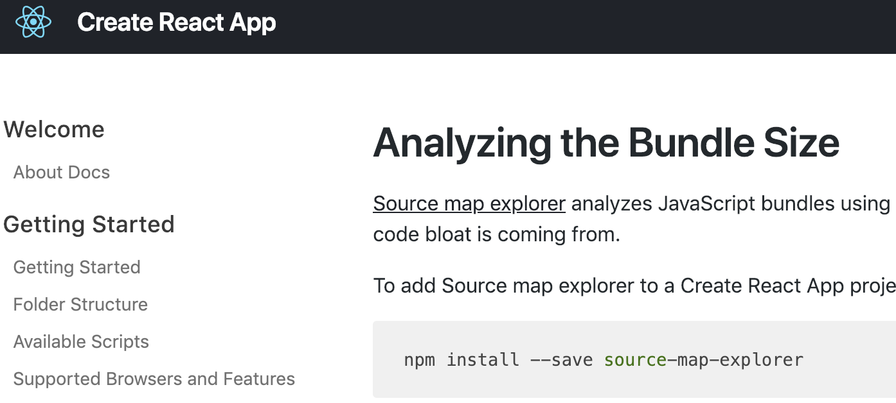

React Recompose
HOCs Everywhere! *
*not Hooks

What is recompose?
A set of HOCs
Higher Order Components
import { withRouter } from 'react-router-dom';
withRouter(Component);
import { connect } from 'react-redux';
connect(...)(Component);
import { withRouter } from 'react-router-dom';
import { connect, compose } from 'react-redux';
import { anotherHOC } from 'another-library';
...
compose(
withRouter,
connect(...),
anotherHOC,
...
)(Component);
Reasons why you want to use HOC in React
- small pieces
- functionally shared logic
- nice readability
- just cool and pro
- and...
composition over inheritance
const MyGuitar = compose(
withAmplifier,
withTuning('bass')('eadg'),
withStrings(4),
withColor('yellow'),
)(Body)
class MyGuitar extends Instrument { ... }
Let's code!
Ordinary state component
class Switch extends Component {
state = { isOn: false };
toggle = () => {
this.setState({ isOn: !this.state.isOn });
}
render () {
return <button onClick={this.toggle}>
{this.state.isOn ? 'ON' : 'OFF'}
</button>
}
}
Recompose it
class Switch extends Component {
state = { isOn: false };
toggle = () => {
this.setState({ isOn: !this.state.isOn });
}
render () {
return <button onClick={this.toggle}>
{this.state.isOn ? 'ON' : 'OFF'}
</button>
}
}
npm i recompose
import { withState, withHandlers } from 'recompose';
recomposed component
const addIsOnState = withState("isOn", "setIsOn", false);
const addHandlers = withHandlers({
toggle: ({ isOn, setIsOn }) => () => setIsOn(!isOn)
});
const SwitchBody = ({ isOn, toggle }) => (
<button onClick={toggle}>
{isOn ? 'ON' : 'OFF'}
</button>
);
Compose back
addState(addHandlers(SwitchBody));
more state - withState
const addColorState = withState(
"color", "setColor", "red",
);
const addIsActiveState = withState(
"active", "setActive", false,
);
addColorState(addIsActiveState(SwitchBody));
lifecycle
import { lifecycle } from 'recompose';
const withRemoteConfig = lifecycle({
componentDidMount() {
setTimeout(() => {
this.props.setActive(true);
}, 4000);
setTimeout(() => {
this.props.setColor("yellow");
}, 6000);
}
});
withRemoteConfig(SwitchBody);
Need a spiner?
// before
const SwitchOrLoader = ({ active }) => (
active ? <Switch /> : <Loader />
);
// after
import { branch, renderComponent } from 'recompose';
const withLoader = branch(
({ active }) => !active,
renderComponent(Loader),
);
withLoader(SwitchBody);
Efficient rendering
// before
shouldComponentUpdate(nextProps) {
return nextProps.isOn !== this.props.isOn;
}
// after
import { onlyUpdateForKeys } from 'recompose';
const addEnergySaving = onlyUpdateForKeys([
"active", "isOn"
]);
addEnergySaving(SwitchBody);
recompose result
setPropTypes
import { setPropTypes } from 'recompose';
const addSwitchTypes = setPropTypes({
isOn: PropTypes.bool,
active: PropTypes.bool,
color: PropTypes.string,
setIsOn: PropTypes.func,
setActive: PropTypes.func,
setColor: PropTypes.func,
toggle: PropTypes.func
});
addSwitchTypes(SwitchBody);
renameProps
import { renameProps } from 'recompose';
const addFancyNames = renameProps({
isOn: "isReallyReallyOn"
});
renameProps(SwitchBody);
toRenderProps
const addProps = withProps(
props => ({ isOff: !props.isOn })
);
const InvertedSwitch = toRenderProps(addProps);
<InvertedSwitch isOn={true}>
{props => <p>{props.isOff ? 'OFF': 'ON'}</p>}
</InvertedSwitch>
compose
How?
pipe
const Switch = compose(
...
c, // -> c(base3)
b, // -> b(base2) returns base3
a, // -> a(base) returns base2
)(base);
How to create your own HOC?
const withTuning = function () {
return function () {
return function () {
...
}
}
}
const withTuning = () => () => () => { ... }
currying
Pass base component as last argument
const withTuning = () => () => (BaseComponent) => { ... }
Pass props
const withTuning = (type) => (tones) => (BaseComponent) => { ... }
Call multiple times
const withBassTuning = withTuning('bass');
// returns function
const withStandardBassTuning = withBassTuning('eadg');
// returns function
withStandardBassTuning(GuitarBody);
Shorter
withTuning('bass')('eadg')(GuitarBody);
Put to compose
const MyGuitar = compose(
withAmplifier,
withTuning('bass')('eadg'), // I'm here
withStrings(4),
withColor('yellow'),
)(GuitarBody)
Is it elegant?
compose in redux
compose in lodash (alias to reverted flow)
compose in recompose
Why recompose?
- no "class" anymore
- less code to write, save time
- functional components are welcome
- keep logic away of view
- all HOC's reasons
Sounds familiar?
You can mix hooks and recompose.
Components Streams
RxJS Support
swapi example
Bundle
Vendors
Full recompose import
Used HOCs import
source-map-explorer
1.49 KB
1.37 KB
1.49 KB - React only
1.37 KB - React + recompose
React Dev Tools
Every single HOC is secret container component
a long, long time ago...
go back to 2016...
createEagerFactory
- is it a function?
- is it a class component?
- has it got context?
- has it got children?
- is the environment production?
components squashing
createEagerFactory -> createHocFromMiddleware
3 month later
Andrew Clark joined Facebook
today...
createHocFromMiddleware -> createFactory
Recap
- HOC is often a regular function
- statless component
doesn't have access to context - a real component is created
only when it's necessary